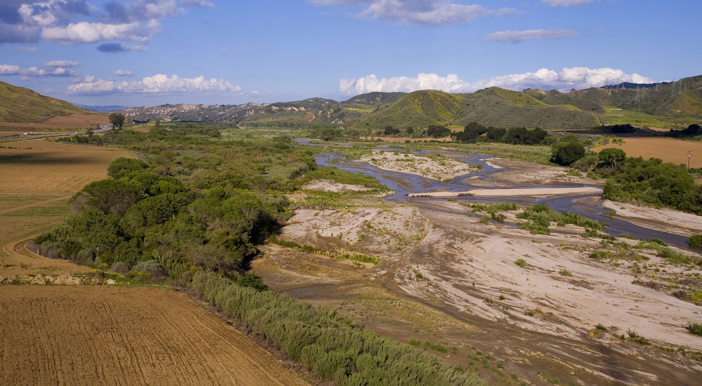
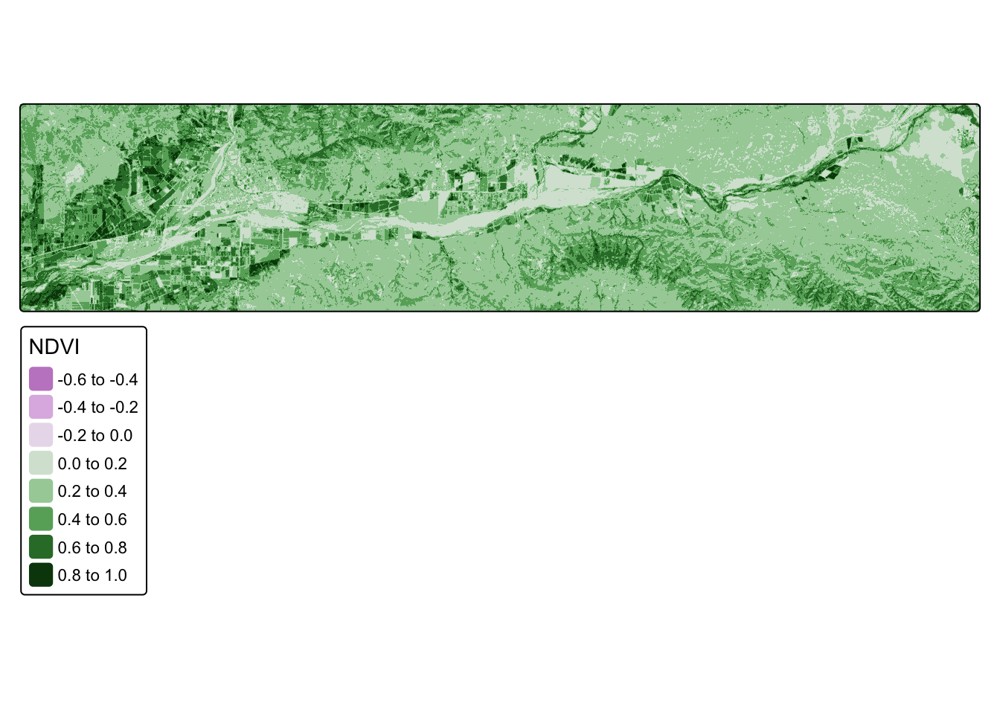
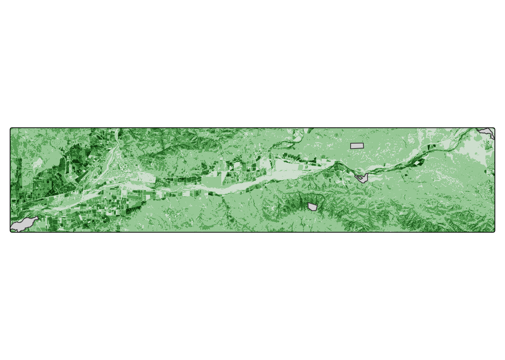
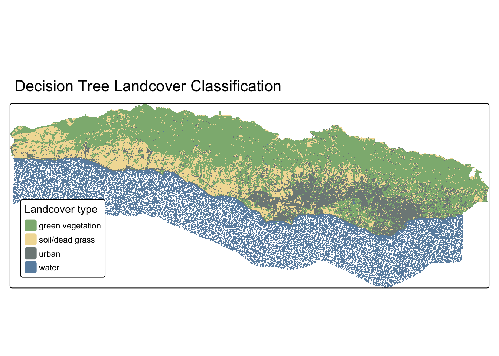

NoteSource Materials
The following materials are based on materials developed by Dr. Chris Kibler for the UCSB Geography Department.
Background
Phenology is the timing of life history events. Important phenological events for plants involve the growth of leaves, flowering, and senescence (death of leaves). Plants species adapt the timing of these events to local climate conditions to ensure successful reproduction. Subsequently, animal species often adapt their phenology to take advantage of food availability. As the climate shifts this synchronization is being thrown out of whack. Shifts in phenology are therefore a common yardstick of understanding how and if ecosystems are adjusting to climate change.
Plant species may employ the following phenological strategies:
- Winter deciduous: lose leaves in the winter, grow new leaves in the spring
- Drought deciduous: lose leaves in the summer when water is limited
- Evergreen: maintain leaves year-round
Task
In this lab we are analyzing plant phenology near the Santa Clara River which flows from Santa Clarita to Ventura. We will investigate the phenology of the following plant communities:
- Riparian forests: grow along the river, dominated by winter deciduous cottonwood and willow trees
- Grasslands: grow in openspaces, dominated by drought deciduous grasses
- Chaparral shrublands: grow in more arid habitats, dominated by evergreen shrubs
To investigate the phenology of these plant communities we will use a time series of Landsat imagery and polygons identifying the locations of study sites within each plant community.
Our primary goal is to compare seasonal patterns across vegetation communities. To do so, we will:
- Convert spectral reflectance into a measure of vegetation productivity (NDVI)
- Calculate NDVI throughout the year
- Summarize NDVI values within vegetation communities
- Visualize changes in NDVI within vegetation communities
NoteGetting started
To get started, fork and clone this repository to access all necessary data.
1. Data
Multi-spectral remote sensing data:
- Landsat’s Operational Land Imager (OLI)
- 8 pre-processed scenes
- Level 2 surface reflectance products
- Erroneous values set to NA
- Scale factor set to 100
- Bands 2-7
- Dates in file name
- Scenes from the following dates:
- 2018-06-12
- 2018-08-15
- 2018-10-18
- 2018-11-03
- 2019-01-22
- 2019-02-23
- 2019-04-12
- 2019-07-01
Locations of representative vegetation communities:
- Polygons representing sites
- study_site: character string with plant type
Workflow
1. Set up
Let’s load all necessary packages:
library(terra)
library(sf)
library(tidyverse)
library(here)
library(tmap)2. Create function to compute NDVI
Let’s start by defining a function to compute the Normalized Difference Vegetation Index (NDVI). NDVI computes the difference in reflectance between the near infrared (NIR) and red bands, normalized by their sum.
ndvi_fun <- function(nir, red){
(nir - red) / (nir + red)
}3. Compute NDVI for a single scene
We have 8 scenes collected by Landsat’s OLI sensor on 8 different days throughout the year.
Let’s start by loading in the first scene collected on June 12, 2018:
landsat_20180612 <- rast(here("data", "landsat_20180612.tif"))Let’s update the names of the layers to match the spectral bands they correspond to:
names(landsat_20180612) <- c("blue", "green", "red", "NIR", "SWIR1", "SWIR2")Now we can apply the NDVI function we created to compute NDVI for this scene using the lapp() function.
- The
lapp()function applies a function to each cell using layers as arguments. - Therefore, we need to tell
lapp()which layers (or bands) to pass into the function.
The NIR band is the 4th layer and the red band is the 3rd layer in our raster. In this case, because we defined the NIR band as the first argument and the red band as the second argument in our function, we tell lapp() to use the 4th layer first and 3rd layer second.
ndvi_20180612 <- lapp(landsat_20180612[[c(4, 3)]], fun = ndvi_fun)Code
tm_shape(ndvi_20180612) +
tm_raster(col.legend = tm_legend("NDVI")) +
tm_layout(legend.outside.position = "right")
Approach #1
We’ll explore the following two approaches to this workflow:
- repeat the previous operations for each scene by copy/pasting code
- create a function to perform the same set of operations to each scene
TipTip for HW #4
In Homework Assignment #4, you’ll be asked to generalize you’re workflow into a function that can be used to run analysis on multiple species. In this lab, we’ll see how to translate code into a generalized function.
1. Compute NDVI for all scences
Now we want to repeat the same operations for all 8 scenes. Below is a possible solution (where we repeat each line for each scene), but it’s pretty clunky.
Let’s load each layer:
landsat_20180612 <-rast(here( "data", "landsat_20180612.tif"))
landsat_20180815 <- rast(here("data", "landsat_20180815.tif"))
landsat_20181018 <- rast(here("data", "landsat_20181018.tif"))
landsat_20181103 <- rast(here("data", "landsat_20181103.tif"))
landsat_20190122 <- rast(here("data", "landsat_20190122.tif"))
landsat_20190223 <- rast(here("data", "landsat_20190223.tif"))
landsat_20190412 <- rast(here("data", "landsat_20190412.tif"))
landsat_20190701 <- rast(here("data", "landsat_20190701.tif"))And rename each layer:
names(landsat_20180612) <- c("blue", "green", "red", "NIR", "SWIR1", "SWIR2")
names(landsat_20180815) <- c("blue", "green", "red", "NIR", "SWIR1", "SWIR2")
names(landsat_20181018) <- c("blue", "green", "red", "NIR", "SWIR1", "SWIR2")
names(landsat_20181103) <- c("blue", "green", "red", "NIR", "SWIR1", "SWIR2")
names(landsat_20190122) <- c("blue", "green", "red", "NIR", "SWIR1", "SWIR2")
names(landsat_20190223) <- c("blue", "green", "red", "NIR", "SWIR1", "SWIR2")
names(landsat_20190412) <- c("blue", "green", "red", "NIR", "SWIR1", "SWIR2")
names(landsat_20190701) <- c("blue", "green", "red", "NIR", "SWIR1", "SWIR2")Next, compute NDVI for each layer:
ndvi_20180612 <- lapp(landsat_20180612[[c(4, 3)]], fun = ndvi_fun)
ndvi_20180815 <- lapp(landsat_20180815[[c(4, 3)]], fun = ndvi_fun)
ndvi_20181018 <- lapp(landsat_20181018[[c(4, 3)]], fun = ndvi_fun)
ndvi_20181103 <- lapp(landsat_20181103[[c(4, 3)]], fun = ndvi_fun)
ndvi_20190122 <- lapp(landsat_20190122[[c(4, 3)]], fun = ndvi_fun)
ndvi_20190223 <- lapp(landsat_20190223[[c(4, 3)]], fun = ndvi_fun)
ndvi_20190412 <- lapp(landsat_20190412[[c(4, 3)]], fun = ndvi_fun)
ndvi_20190701 <- lapp(landsat_20190701[[c(4, 3)]], fun = ndvi_fun)Let’s combine NDVI layers into a single raster stack.
all_ndvi <- c(ndvi_20180612,
ndvi_20180815,
ndvi_20181018,
ndvi_20181103,
ndvi_20190122,
ndvi_20190223,
ndvi_20190412,
ndvi_20190701)Now, update the names of each layer to match the date of each image:
names(all_ndvi) <- c("2018-06-12",
"2018-08-15",
"2018-10-18",
"2018-11-03",
"2019-01-22",
"2019-02-23",
"2019-04-12",
"2019-07-01")Approach #2
1. Compute NDVI for all scenes
The first attempt was pretty clunky and required a lot of copy/pasting. Because we’re performing the same operations over and over again, this is a good opportunity to generalize our workflow into a function!
TipWhen should I create a function?
There are lots and lots of reasons to create a function! The biggest clue that you should consider creating one is if you have several lines of code duplicated.
Let’s start over and see how we could do this more efficiently.
We’ll clear our environment and redefine our function for NDVI:
rm(list = ls())
ndvi_fun <- function(nir, red){
(nir - red) / (nir + red)
}Next, let’s first sketch out what operations we want to perform so we can figure out what our function needs.
WarningDon’t run this code!
Before diving into the detailed nuances of your function, it’s helpful to start by outlining the major steps you want your function to perform using pseudo-code.
# NOTE: this code is not meant to run!
# we're just outlining the function we want to create
create_ndvi_layer <- function(){
# step 1: read scene
landsat <- rast(file)
# step 2: rename layer
names(landsat) <- c("blue", "green", "red", "NIR", "SWIR1", "SWIR2")
# step 3: compute NDVI
ndvi <- lapp(landsat[[c(4, 3)]], fun = ndvi_fun)
return(ndvi)
}
# What do we notice as what we need to pass into our function?
TipTurning pseudo-code into real code
Now that we’ve written out the pseudo-code, we need to ask ourselves what argument(s) we would need to pass into our function to set off the process.
In this case, the first operation needs a file name to read in. So, we now we need to figure out a way to come up with a set of file names to iterate through.
We want a list of the scenes so that we can tell our function to compute NDVI for each. To do that we look in our data folder for the relevant file. To do so, we want to do the following:
- Ask for the names of all the files in the
datafolder - Set the
patternoption to return the names that end in.tif(the file extension for the Landsat scenes) - Set the
full.namesoption returns the full file path for each scene
files <- list.files(
here("data"), pattern = "*.tif",
full.names = TRUE)Now let’s update our function to work with list of file names we created:
- Pass function a number that will correspond to the index in the list of file names
create_ndvi_layer <- function(i){
landsat <- rast(files[i])
names(landsat) <- c("blue", "green", "red", "NIR", "SWIR1", "SWIR2")
ndvi <- lapp(landsat[[c(4, 3)]], fun = ndvi_fun)
return(ndvi)
}Let’s test our function by asking it to read in the first file:
test <- create_ndvi_layer(1)Now we can use our function to create a NDVI layer for each scene and stack them into a single rasterstack. And then update layer names to match date:
all_ndvi <- c(create_ndvi_layer(1),
create_ndvi_layer(2),
create_ndvi_layer(3),
create_ndvi_layer(4),
create_ndvi_layer(5),
create_ndvi_layer(6),
create_ndvi_layer(7),
create_ndvi_layer(8))
names(all_ndvi) <- c("2018-06-12",
"2018-08-15",
"2018-10-18",
"2018-11-03",
"2019-01-22",
"2019-02-23",
"2019-04-12",
"2019-07-01")
TipCritical thinking
Is there a way to improve this last step even further? Wrap it into a for loop? Could we pull the date strings directly from the file names?
Compare NDVI Across Vegetation Communities
Now that we have computed NDVI for each of our scenes (days) we want to compare changes in NDVI values across different vegetation communities.
1. Get data on vegetation communities
First, we’ll read in a shapefile of study sites:
Code
tm_shape(all_ndvi[[1]]) +
tm_raster() +
tm_shape(sites) +
tm_polygons() +
tm_layout(legend.show = FALSE)
2. Extract NDVI at study sites
Now we want to find the average NDVI within each study site. The output of terra::extract() is a data.frame with rows that match the study site data set, so we bind the results to the original data set.
sites_ndvi <- terra::extract(all_ndvi, sites, fun = "mean")
sites_annotated <- cbind(sites, sites_ndvi)We’re done! Except our data is very untidy… Let’s tidy it up!
- Convert to data frame
- Turn from wide to long format
- Turn layer names into date format
- Combine study sites by vegetation type
- Summarize results within vegetation types
sites_clean <- sites_annotated %>%
# initial cleaning
st_drop_geometry() %>% # drop geometry
select(-ID) %>% # remove ID generated by terra::extract()
# reformat data frame
pivot_longer(!study_site) %>% # reshape data frame
rename("NDVI" = value) %>% # assign "value" to NDVI
# create date attribute
mutate("year" = str_sub(name, 2, 5), # pull out elements of date
"month" = str_sub(name, 7, 8),
"day" = str_sub(name, -2, -1)) %>%
unite("date", 4:6, sep = "-") %>% # combine date elements
mutate("date" = lubridate::as_date(date)) %>%
# rename combine study sites by vegetation type
mutate("veg_type" = case_when(study_site == "forest1" ~ "forest",
study_site == "forest2" ~ "forest",
study_site == "forest3" ~ "forest",
study_site == "grassland" ~ "grassland",
study_site == "chaparral" ~ "chaparral")) %>%
# summarize results by vegetation type
group_by(veg_type, date) %>%
summarize("NDVI" = mean(NDVI, na.rm = TRUE))3. Plot results
Let’s plot the results!
Code
ggplot(sites_clean,
aes(x = date, y = NDVI,
group = veg_type, col = veg_type)) +
scale_color_manual(values = c("#EAAC8B", "#315C2B","#9EA93F")) +
geom_line() +
geom_point() +
theme_minimal() +
labs(x = "", y = "Normalized Difference Vegetation Index (NDVI)", col = "Vegetation type",
title = "Seasonal cycles of vegetation productivity") 
TipCritical thinking
What do we notice in the seasonal cycle in NDVI across vegetation communities?
- chaparral: NDVI stays relatively constant throughout the year
- forest: NDVI is lowest in the winter and highest in the summer
- grassland: NDVI is highest in the winter and lowest in the summer
Does this match our expectations?